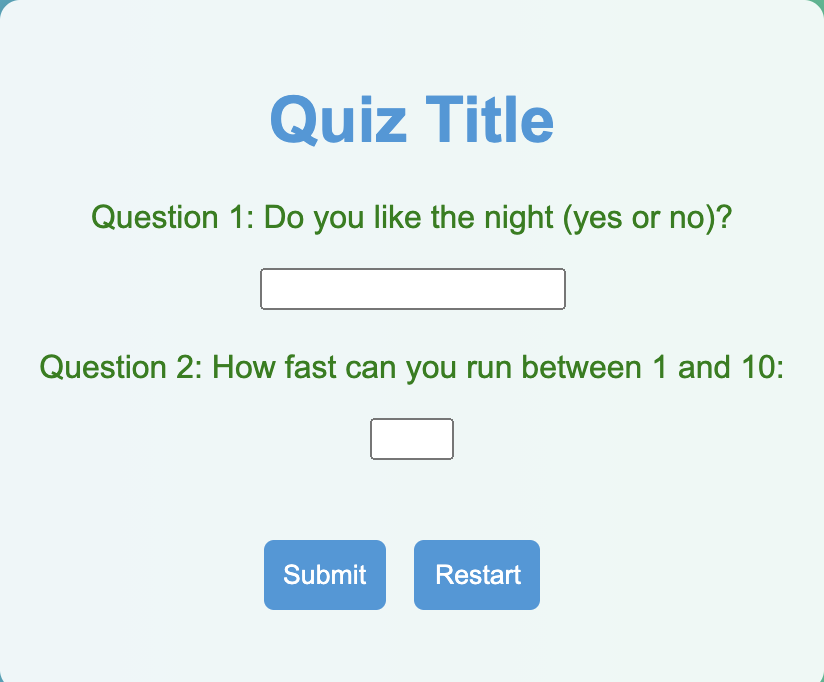
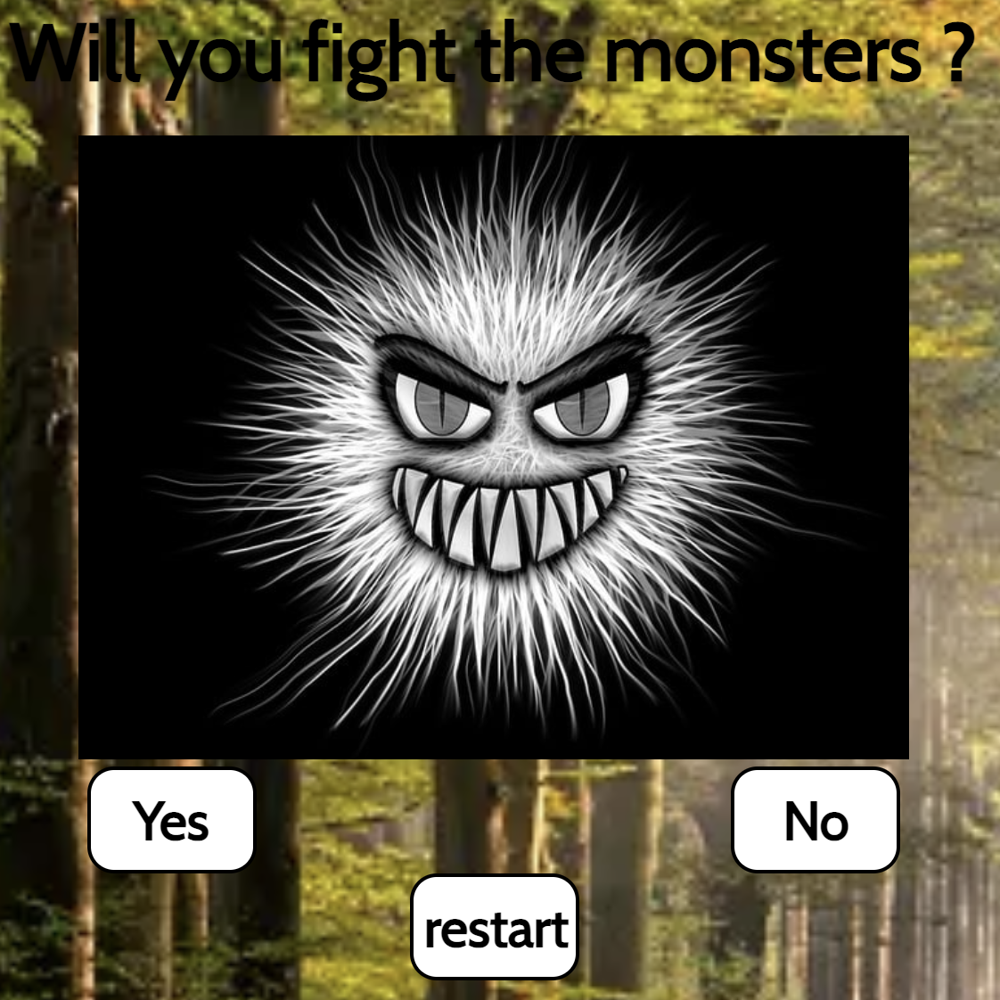
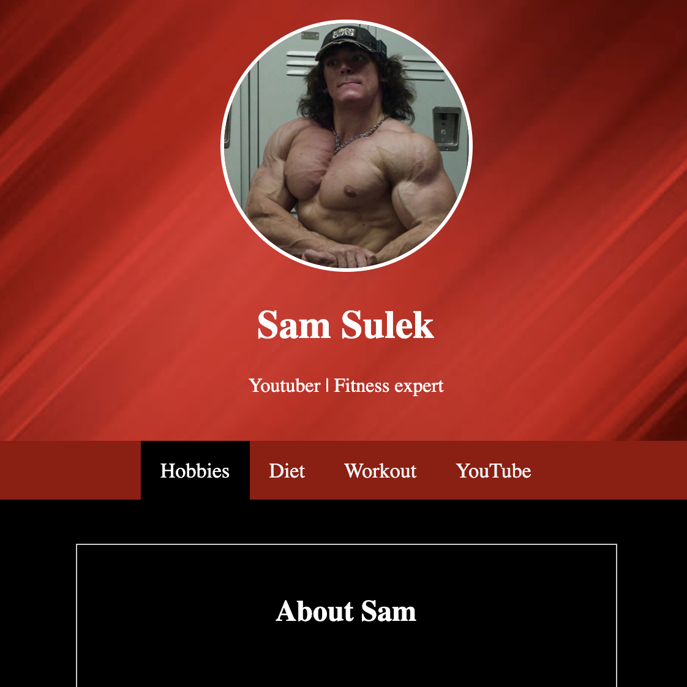
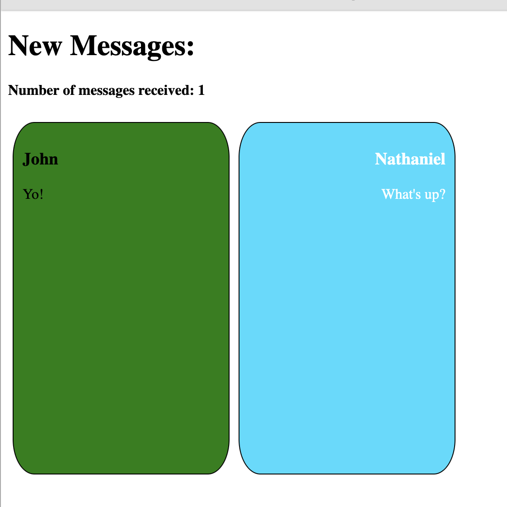
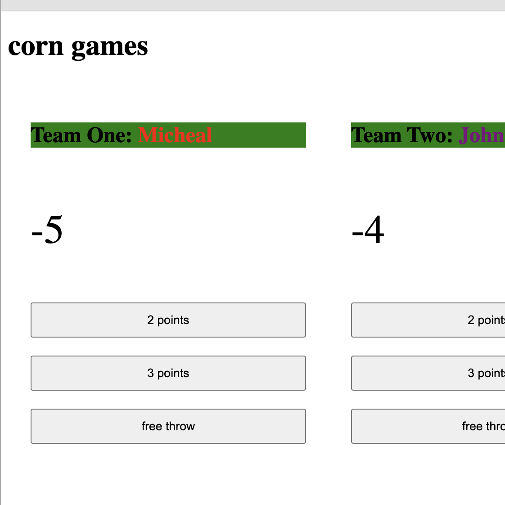
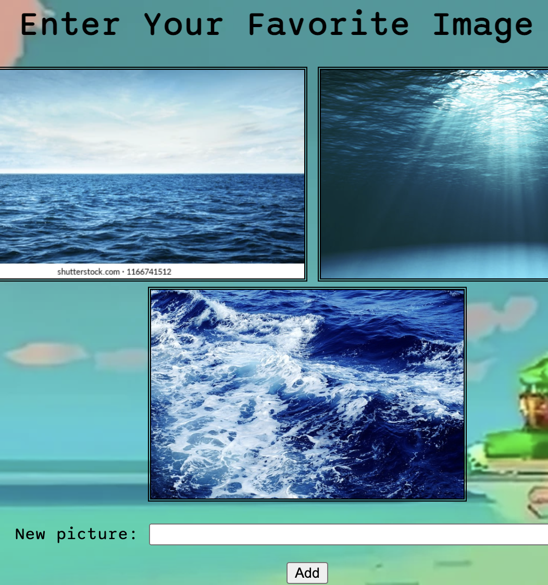
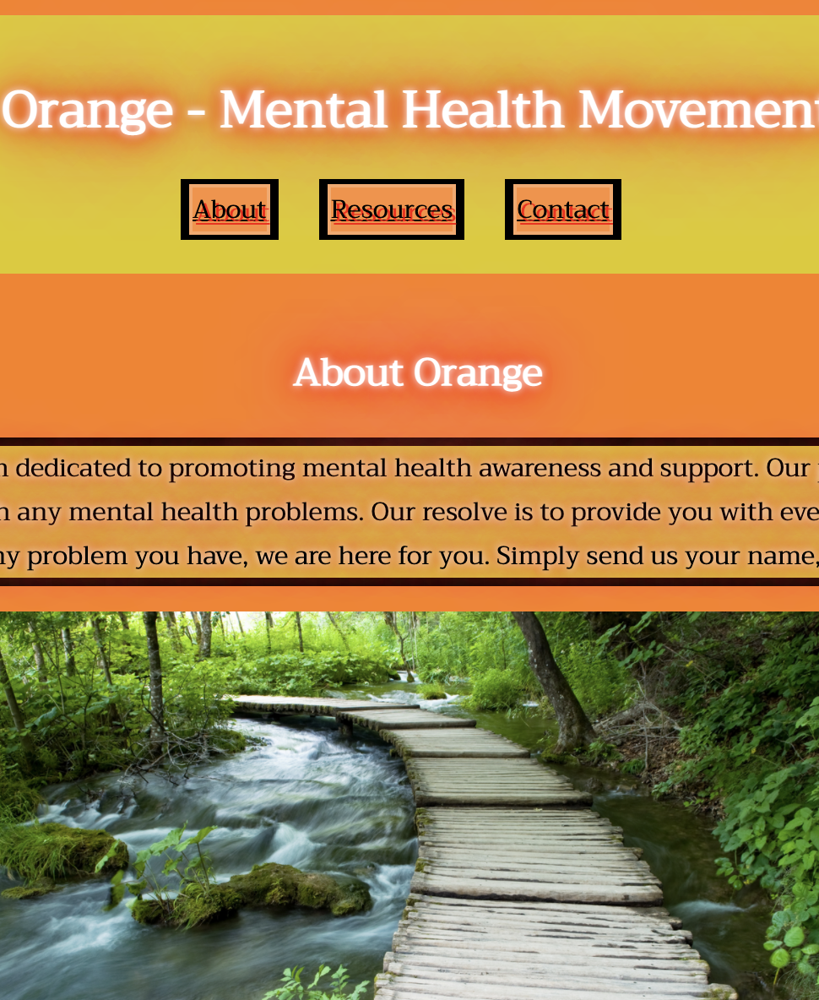
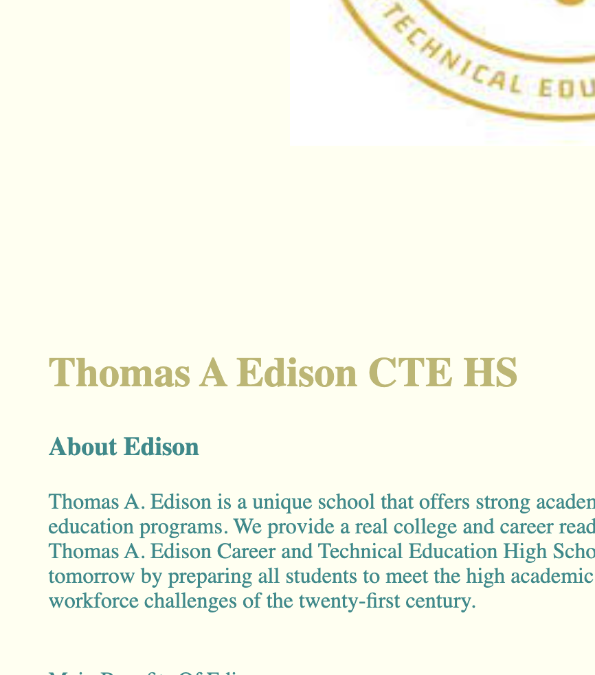

Here Are My Projects!
Character Quiz

The goal of this project was to create a quiz where the answer would reveal a television character.
You will be assigned the character that most closely corresponds to the questions you answered.
Our knowledge of utilizing if/else conditions in JavaScript was put to the test with this assignment.
I think the process of creating the project taught me a lot.
Adventure Game

We had to use jQuery actions to create an adventure game for this assignment.
It was my first experience with these new activities, therefore mastering them was crucial to completing this project.
We were meant to be taken back to the game's starting point by clicking the button.
As a result, clicking the button returns you to the home page.
Social Media Page

For this project we had to make a social media page for someone we classified as a hero.
I chose my favorite artist Denzel Curry.
I felt like when making this project it helped me better understand the flexbox tool.
I understood what each position meant but applying it to a website where there's multiple positions it really helped.
I struggled on positioning my divs correctly so they all were coherent with each other.
Chatbot

We had to make a chatbot where you would send a message and it would appear in the feed tothe other person.
The most important thing I learned while making the chatbot was using the mastering the append feature.
Basketball Counter

For the Basketball Counter we had to use our skills of jquery to keep a counter for how many points were scored in the game.
I learned how to make a counter with jquery.
Gallery Project

For the college packing list we had to use buttons to append items on to a list.
I learned how to use the click function better.
This was something I previously worked on but still struggled. So having this extra practice was really good for me.
Social Issue Project

This project focused on the social issue of mental health.
I learned to incorporate my coding skills to social issues.
Edison Website Project

This project focused on making edison a better place.
I learned more on deign and accessibility making my website look better matching edisons theme.